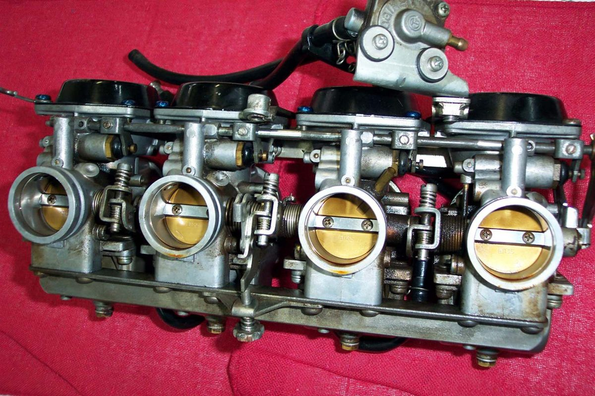

The engine stumbles, coughs or nearly stalls when the throttle is opened quickly from idle. A CV (constant velocity) carburettor should not do this. Its slide is lifted by engine suction, not by the cable, so a fast throttle gives a smooth rise in power. When it does stumble, the slide is slow to lift, sticks, or the suction is leaking away.
Is it safe to ride?
Ride with care. Open the throttle gently when pulling out into traffic until it is fixed.
Quick checks first
- Is the engine warm and the choke fully off?
- Is the air filter clean?
- Does the throttle cable move freely, with a small amount of free play?
- Does the bike stand for long periods with fuel in the carburettor?
Diagnose it step by step
1Does the engine only stumble when the throttle is snapped open, but run well when opened slowly?
- Yes: go to step 2.
- No, it also stumbles at steady throttle: see Flat spot or Hesitates when opening the throttle.
2Is the throttle cable stiff or are the free play and the plate action wrong?
- Yes: Adjust throttle free play.
- No: go to step 3.
3Does the idle change when you spray water or carburettor cleaner on the intake rubber joints?
- Yes: Find an intake air leak.
- No: go to step 4.
4With the air filter off, does the slide lift smoothly with a finger and fall when released?
- Stiff or slow to rise: Check a CV carburettor slide and diaphragm.
- Smooth: go to step 5.
5Is the diaphragm torn, pinholed or hard, or are the vacuum or air holes blocked?
- Yes: replace the diaphragm and clean the holes. See Check a CV carburettor slide and diaphragm.
- No: Clean the carburettor.
On a multi-carburettor engine, uneven adjustment between carburettors can also give a stumble. A correctly adjusted set rises smoothly from idle to full throttle however hard the throttle is opened.
Causes, most likely first
| Cause | How to confirm | Fix |
|---|---|---|
| Sticking slide | Slide does not drop or rise freely by hand | CV carburettor check |
| Torn or hard diaphragm | Pinholes seen against light | CV carburettor check |
| Blocked vacuum or air holes | No flow when blown through | Clean the carburettor |
| Intake air leak | Idle changes with spray | Intake leak test |
| Carburettors out of balance (multi) | Rough rise, uneven pull | Workshop balance of the set |